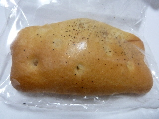
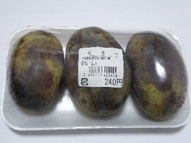
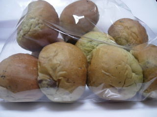

道の駅赤来高原のハムチーズフォカッチャ。
2013/10/27
赤来高原の道の駅でパンを買いました。
パンは人気みたいで、ほとんどが売り切れていました。
でもまだ残っていて良かった。

買ったのはハムチーズフォカッチャです。
中にはトマトソースとハムとチーズが入っていて、ピザっぽい感じでした。
こうなっているとピザパンも食べやすいね。
島根県飯石郡飯南町下赤名880-3
2013/10/27
赤来高原の道の駅でパンを買いました。
パンは人気みたいで、ほとんどが売り切れていました。
でもまだ残っていて良かった。

買ったのはハムチーズフォカッチャです。
中にはトマトソースとハムとチーズが入っていて、ピザっぽい感じでした。
こうなっているとピザパンも食べやすいね。
2013/10/27
赤来の道の駅の横にある直売所「ぼたんの郷」でポポーって果物をみつけました。
果樹の本なんかで見て知ってはいたんですが、本物を見たのは初めてです。

試食を食べたら美味しかったので買っちゃいました。
240円で値段が高くなくていいですね。
マンゴーのようなバナナのような、南国感のある味と香りです。
帰りの車内はポポーの香りでいっぱいになりました。
2009/09/26
桑抹茶や黒豆、大和芋が入っているヘルシーそうなパンです。

売り場では薬膳パンって紙が貼ってあったので、きっと何かいい効能があるんでしょう。桑抹茶って飯南町の特産らしいですが、何にいいんでしょうね？
桑抹茶入りなので、少しだけ苦味がありました。黒豆は甘く煮てあるので、黒豆に当たったときはお菓子な感じがしました。
この道の駅ではパンを沢山販売していて、ちょっとパン屋さんのようでした。